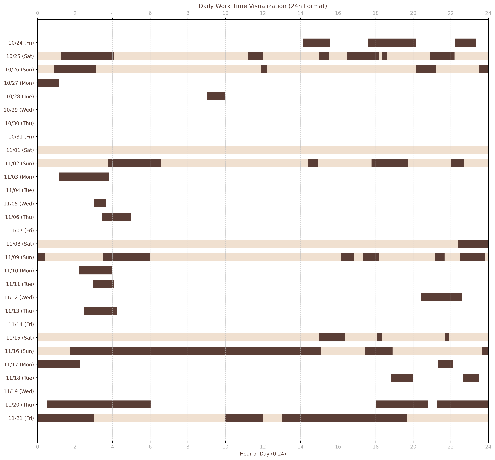
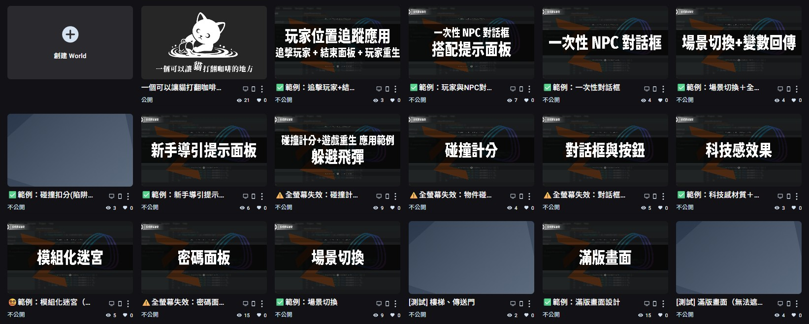

開發歷程
本頁面紀錄開發期間的資訊，活動時間為2025/10/24~2025/11/21，本遊戲共花費了89個小時又20分鐘製作。非上班日僅有10日，時間上非常倉促。
- 開發時間：2025/10/24~2025/11/21
- 非工作日：
- 國定假日：10/24(五)光復節
- 週末六日：10/25(六)、10/26(日)、11/1(六)、11/2(日)、11/8(六)、11/9(日)、11/15(六)、11/16(日)
- 其他休息：11/21(五)體檢日
- 總計時間：89小時20分鐘
遊戲製作靈感
💖
無條件的愛
打翻你的咖啡，弄髒我的肉球
🐱
貓咪共和國
遊戲最初的靈感來源
🏠
領養代替購買
整體理念與主題方向
本次的故事靈感來自韋禮安的歌曲《貓咪共和國》。
10/26 在發想遊戲並建構可用模組時，我頻繁卡關，又一直因 3D 暈而感到不適，加上多日熬夜，身體狀況每況愈下。於是我決定出門透透氣，當天到台北 101 水舞廣場的 Elle Weekend 聽韋禮安演唱。
我突然想起他有一首《貓咪共和國》，其中「打翻你的咖啡，弄髒我的肉球」這句歌詞讓我覺得無奈又可愛，傳達了一種無條件的包容與愛，和我一直想推廣的「領養代替購買」理念有著很自然的連結。於是遊戲的靈感就在那一刻萌芽。
雖然最後遊戲的整體設計與這首歌曲已經沒有直接相關，但正是這句歌詞啟發了我，因此我決定以「尋貓」為主題，並將遊戲命名為
一個可以讓貓打翻咖啡的地方
相較於 Hackathon I 時偏沉重的遊戲風格，這次我希望能打造一個更溫暖、更有世界觀的作品。不過由於製作期僅有 30 天，時間非常有限，最終仍不得已做出一些刪減。
開發時程表
日期與工作時間
工作細節整理
| 日期 | 星期 | 時段 | 時長 | 內容 | 範例 | 演示 |
|---|---|---|---|---|---|---|
| 10月24日 (光復節) |
五 | 14:07 - 15:35 | 01:28:00 | [功能測試] 滿版畫面（無法遮擋 VIVE UI） | ✔️滿版畫面（無法遮擋VIVERSE物件） | 演示 |
| 17:36 - 20:10 | 02:34:00 | [功能測試] 滿版畫面 | ✔️範例：滿版畫面設計 | 演示 | ||
| 22:13 - 23:20 | 01:07:00 | [功能測試] 迷宮創建-樓梯測試 | ✔️ | |||
| 10月25日 | 六 | 01:15 - 04:04 | 02:49:00 | [功能測試] Claude Approaching weekly limit — MCP 很吃 token | ||
| 11:12 - 12:00 | 00:48:00 | [功能測試] local-player靠近才能點物品 | ✔️ | |||
| 15:00 - 15:30 | 00:30:00 | [功能測試] 顯示面板且可點擊 | ❌ | |||
| 16:30 - 18:37 | 01:57:00 | 感到挫敗（兩次記錄合併） | ❌ | |||
| 20:55 - 22:12 | 01:17:00 | [功能測試] 場景傳送 + Close for Trigger Enable Click Object + 顯示面板 | ✔️範例：場景切換 | 演示 | ||
| 10月26日 | 日 | 00:54 - 03:06 | 02:12:00 | [功能測試] 模組化迷宮設計 | ❌ | |
| 11:54 - 12:14 | 00:20:00 | [功能測試] 模組化迷宮設計 (Python Version) 感到挫敗 --> 去聽韋禮安唱歌 |
✔️ | |||
| 20:08 - 21:14 | 01:06:00 | [功能測試] 密碼面板設計(HTML DOM) | ✔️全螢幕失效：密碼面板設計 | 演示 | ||
| 23:30 - 00:00 | 00:30:00 | [構思] 模組化迷宮設計 | ❌ | |||
| 10月27日 | 一 | 00:00 - 01:08 | 01:08:00 | [構思] [功能測試] 模組化迷宮設計 — 但很容易暈眩不能玩 | ✔️範例：模組化迷宮（雖可用但易暈） | 演示 |
| 10月28日 | 二 | 09:00 - 10:00 | 01:00:00 | ✔️全螢幕失效：對話框效果 | 演示 | |
| 11月2日 | 日 | 03:45 - 06:35 | 02:50:00 | [功能測試] 物件碰撞計分效果 [功能測試] 物件碰撞計分效果應用－－重生效果 |
✔️全螢幕失效：物件碰撞計分 Fail |
演示 |
| 14:25 - 14:56 | 00:31:00 | [功能測試] 物件碰撞計分效果應用－－重生效果 | ✔️範例：碰撞扣分+遊戲結束重生 | 演示 | ||
| 17:47 - 19:42 | 01:55:00 | [功能測試] 物件碰撞計分效果應用－－重生效果（四處來的飛彈） | ❌ | |||
| 22:00 - 22:41 | 00:41:00 | [功能測試] 物件碰撞計分效果應用－－重生效果（四處來的飛彈） | ✔️全螢幕失效：碰撞計分+重生效果－－躲避飛彈 | 演示 | ||
| 11月3日 | 一 | 01:09 - 03:48 | 02:39:00 | [資料整理] | ||
| 11月5日 | 三 | 03:00 - 03:40 | 00:40:00 | [錯誤修正] 將 HUD 與導引 overlay 附加到 this.app.graphicsDevice.canvas.parentNode 而不是 document.body，配合固定/絕對定位與高 z-index，能確保它們在全螢幕模式下仍然可見。 | ✔️範例：新手導引提示面板 | 演示 |
| 11月6日 | 四 | 03:26 - 05:00 | 01:34:00 | [功能測試] 場景切換+資料回傳 | ✔️範例：場景切換＋全域變數紀錄 | 演示 |
| 11月8日 | 六 | 22:23 - 24:00:00 | 01:37:00 | [功能測試] NPC對話框 | ❌ | |
| 11月9日 | 日 | 00:00 - 00:25 | 00:25:00 | [功能測試] NPC對話框雛形 | ||
| 03:30 - 05:58 | 02:28:00 | [功能測試] NPC對話框（部分完成）－－單次顯示 | － | |||
| 16:10 - 16:51 | 00:41:00 | [功能測試] NPC對話框（沒有更新的進展）－－單次顯示 | － | |||
| 17:20 - 18:10 | 00:50:00 | [功能測試] NPC對話框（一次性）／優化 | － | |||
| 21:10 - 21:40 | 00:30:00 | [功能測試] NPC對話框（一次性）／優化 | ✔️範例：一次性對話框 | 演示 | ||
| 22:30 - 23:50 | 01:20:00 | [功能測試] NPC對話框（一次性）＋ICON提示面板 | ✔️範例：玩家與NPC對話 + 提示ICON | 演示 | ||
| 11月10日 | 一 | 02:14 - 03:57 | 01:43:00 | [資料整理] PlayCanvas.com 網站當了只好整理之前寫過的操作 | ||
| 11月11日 | 二 | 02:56 - 04:05 | 01:09:00 | [功能測試] VIVERSE 原生物件抓取（例如：PLAYER），應用技巧來自：this.app.root.findByName(‘PLAYER’); | ✔️範例：追擊玩家+結束面板+玩家重生 | 演示 |
| 11月12日 | 三 | 20:26 - 22:36 | 02:10:00 | [功能測試] 種植系統與經驗值（倒計時面板不佳） | ||
| 11月13日 | 四 | 02:30 - 04:14 | 01:44:00 | [功能測試] UI 元素跟隨 3D 物體 | ❌ | |
| 11月15日 | 六 | 15:00 - 16:21 | 01:21:00 | [場景建置] Prototype 1 不知為何不能上傳了 [場景建置] Prototype 2 對話面板與提示面板調整 |
||
| 18:04 - 18:19 | 00:15:00 | [場景建置] 找素材 — 3D暈了 | ||||
| 21:41 - 21:55 | 00:14:00 | [場景建置] 找素材 — 3D暈更嚴重了 | ||||
| 23:40 - 24:00 | 00:20:00 | [場景建置] Scene1-1 架設調整+NPC製作 | ||||
| 11月16日 | 日 | 01:43 - 14:12 | 12:29:00 | [場景建置] (包含 13:21-13:39 的 00:18:00 間歇) | ||
| 14:10 - 15:07 | 00:57:00 | [場景建置] 3D暈 | ||||
| 17:25 - 18:54 | 01:29:00 | [場景建置] Scene1-1 架設完成 | ||||
| 23:40 - 24:00:00 | 00:20:00 | [場景建置] Scene1-1 架設調整+NPC製作 | ||||
| 11月17日 | 一 | 00:00 - 02:15 | 02:15:00 | [場景建置] Scene1-2 設計 | ||
| 21:20 - 22:07 | 00:47:00 | [場景建置] Scene1-2 設計 | ||||
| 11月18日 | 二 | 18:49 - 20:00 | 01:11:00 | [場景建置] Scene1-2 大致完成 | ||
| 22:40 - 23:30 | 00:50:00 | [場景建置] Scene2-1 | ||||
| 11月20日 | 四 | 00:31 - 06:01 | 05:30:00 | [場景建置] Scene2-2 大致完成 尚缺細節 [場景建置] Scene3-1 |
||
| 18:00 - 20:47 | 02:47:00 | [場景建置] 開發網站基礎模型 | ||||
| 21:17 - 24:00:00 | 02:43:00 | [場景建置] Scene4-1 | ||||
| 11月21日 (體檢假) |
五 | 00:00 - 03:00 | 03:00:00 | [場景調整] 遊戲內容刪減（時間和空間不足保留基本元素） [場景調整] 場景錯誤修正 |
||
| 10:00 - 12:00 | 02:00:00 | [場景調整] 場景錯誤修正 [影片製作] 遊戲開始與結束影片製作 |
||||
| 13:00 - 19:41 | 06:41:00 | [場景調整] 遊戲操作測試 [場景調整] 場景錯誤修正 [影片製作] 遊戲開始與結束影片製作 |
AI 應用評比
以下評比基於本次 Hackathon II 專案的使用體驗，除了 Claude 為 Pro Plan 外，其他均為免費版本。
本次 Hackathon II 專案，我採用「多 AI 協作」的模式，將各平台視為我的 Team Member，讓它們之間互相除錯並提供解決方案，而我則扮演 Multi-Context Processing (MCP) 的角色，負責串聯、統整及修正討論結果。
以下為個人實際使用的心得評價。
| 能力面向 | 🥇 第一名 | 🥈 第二名 | 🥉 第三名 | 未列入評比/備註 |
|---|---|---|---|---|
| 對話親和度 | ChatGPT | Gemini | Claude Pro | Grok、DeepSeek |
| 程式碼能力 | Gemini | ChatGPT | Claude Pro | Grok、DeepSeek |
| 文案與寫作 | Claude Pro | Gemini | ChatGPT | Grok、DeepSeek |
| 圖像生成 | Gemini | Grok | Gemini 有浮水印，Grok 無浮水印 | |
| 影片生成 | Grok | Gemini 須付費 | ||
| 3D 物件生成 | Tripo3D | MeshyAI | Hitem3D | MeshyAI 免費版不能下載 |
Gemini
全面能力大幅提升，專案貢獻度最大
- 程式：大幅提升，編纂能力極為出色，小幅度領先 ChatGPT 和 Claude
- 圖像：大幅提升
- 文案：小幅提升
- 程式：操作與偵錯方法上，描述常常過於簡略或用過於專業的寫法，容易造成困惑或混亂
- 程式：在含有中文的程式碼中，空格字元會用
U+0020來顯示，這無法運作，需要手動取代成U+00A0
- 考慮到其全面的提升，特別是未來影片生成能力的發展，Gemini 將是下次付費訂閱的首選目標
- 生成圖片與影片，如果是20美元/月的話，還是會有浮水印
ChatGPT
最容易溝通與理解的 AI 工具
- 對話：語氣親和度極高，對話壓力最小，互動體驗最舒適
- 程式：相對於Gemini，其程式撰寫優勢已漸被超越
- 文案：產出的內容感覺相對敷衍
- 對話：過度的讚美讓鼓勵變得有些廉價，失去前一次在情緒上的鼓舞感
Claude (Pro Plan)
文案寫作能力強，工程表現不佳
- 文案：寫作能力極為細膩且精彩
- 對話：將已生成的答案自動收回，導致一個問題需要重複發問，變相消耗兩倍 Token
- MCP：精準度不夠，實用性不如自己手動操作，MCP 極為耗費 Token
- 程式：錯誤率偏高
Grok
免費使用者影片生成的最佳選擇
- 影片：在免費影片生成額度上比 Gemini 更大方，且生成水準不錯，產出的影片沒有浮水印
- 本次主要作為輔助工具，用於圖片和影片生成
DeepSeek
鬼打牆時的奇兵
- 專門用於解決 Gemini、ChatGPT 和 Claude 三者討論陷入僵局或鬼打牆時的備用方案。偶爾能提供截然不同的解決思路，確實有效幫助了幾次。雖然使用頻率低，但其獨特的視角值得肯定。
3D 物件生成工具比較
三款 3D 生成工具評比
- Tripo3D：在生成物件的精緻度上有明顯優勢。
- MeshyAI：免費額度不能下載生成的 3D 模型。
- Hitem3D：生成的物件相對粗糙。
AI 應用說明
程式碼
- 啟 動 (A)：產生新的編程想法或接收一個任務。
- 協作撰寫 (C)：使用多個模型平行或迭代地撰寫程式碼。
- 互相除錯 (D)：讓不同的模型檢查、驗證並修復彼此或自己生成的程式碼。
- 外部諮詢 (E)：當主要模型無法解決時，引入 DeepSeek 尋求不同的思路或更專業的建議。
- 整合測試 (F)：將最終程式碼投入執行環境進行測試 (類似 MCP - Master Control Program 的核心測試概念)。
- 結 束 (G)：測試成功，任務完成。
影像生成
- 使用 Gemini 或 Grok 生成特定的圖片
- Gemini 的 Nano Banana，可以使圖片保持同樣的風格與外觀的前提下，對圖片進行微調
影片生成
- PlayCanvas 建立場景
- PlayCanvas 移動相機拍攝位置
- 預覽畫面截圖畫面
- Grok 生成影片：指令可包含動畫內容、鏡位移動、光線變化等
hackthon II 製作心得
程式碼模組開發
本次遊戲開發中，將功能程式碼模組化，未來可再次利用。
模組一覽圖
模組一覽表
| 功能 | 教學 JFSBLOG |
專案 PlayCanvas |
演示 VIVERSE |
說明 |
|---|---|---|---|---|
| 滿版畫面 | 文章 | 專案 | 演示 | |
| 場景切換（課程範例） | 文章 | 專案 | 演示 | |
| 場景切換＋全域變數紀錄 | 文章 | 專案 | 演示 | |
| 密碼面板 | 文章 | 專案 | 演示 | |
| 模組化迷宮 | 文章 | 專案 | 演示 | |
| 對話框 | 文章 | 專案 | 演示 | |
| 物件碰撞計分 | 文章 | 專案 | 演示 | |
| 物件碰撞計分＋玩家重生 | 文章 | 專案 | 演示 | |
| 物件碰撞計分＋玩家重生－－躲避飛彈 | 文章 | 專案 | 演示 | |
| 導引提示面板 | 文章 | 專案 | 演示 | |
| 一次性對話框（NPC） | 文章 | 專案 | 演示 | |
| 重複觸發對話框（NPC） | 文章 | N/A | N/A | |
| 一次性對話框（NPC）＋任務提示面板 | 文章 | 專案 | 演示 | |
| VIVERSE原生物件抓取→追擊玩家＋結束面板＋玩家重生 | 文章 | 專案 | 演示 | |
| 種植系統與經驗值 | 文章 | 專案 | N/A |